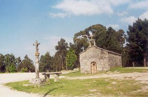
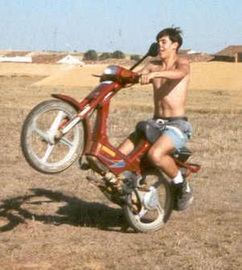

Tomeza
 De: La Frikipedia, la enciclopedia extremadamente seria.
De: La Frikipedia, la enciclopedia extremadamente seria.
| De la serie ciudades del mundo:
|
| Tomeza
|
|
|
|
| (Bandera)
|
(Escudo de armas)
|
|
| Topónimo oficial
|
He dicho: Tomeza
|
| País
|
Titiño Tantania
|
| Código postal
|
36158,¡Mira, un dato correcto!
|
| Superficie
|
Caminos pedregosos
|
| Altitud
|
¿Te crees que me voy a poner a medir el monte?
|
| Distancia
|
Si nos lo proponemos, conquistamos España
|
| Fundación
|
120 a.F.(Antes de Fraga)
|
| Población
|
De lo más variopinta
|
| Gentilicio
|
Pisco
|
| Alcalde
|
Si te presentas, tú
|
 Aquí podemos ver una foto de la antigua capilla de San Cibrán,situada en el monte homónimo, ahora la zona está mucho mejor,y ya es un picadero decente
Mundialmente conocida entre los lingüistas por ser el último pueblo de las rías Baixas que tiene seseo en su gallego autóctono.
¿De verdad a alguien le interesa eso? Si has venido hasta aquí buscando Tomeza, dudo mucho que sea eso lo que pretendes encontrar. Comencemos con una pequeña introducción a esta descomunal urbe de unos 1100 habitantes situada en la noble provincia de Edad de Piedra, cuando los Fragasaurios todavía gobernaban las Tierras gallegas, la gente ya tallaba las piedras para hacer puntas de lanza y otras cosas inservibles. El oficio de cantero destaca entre los muchos otros que existen en estos lares, que abarcan desde los clásicos que se dedican a plantar patatas y a ordeñar astronauta...¿cómo, que no quedan astronautas, y ahora cómo se lo explico yo a estos señores...? Bueno, bueno, lo comprenderán.
Entrañables personajes de Tomeza
 Éste es Hermindo en sus tiempos mozos flipándolo con su moto nueva. Se veía venir el tipo de hombre que iba a ser.
- Hermindo o Paxareiro: Si Tomeza tuviese alcalde, estoy seguro de que este energúmeno se llevaría ese título. Veamos, resulta que este individuo está forrado, ¿y qué hace uno cuándo está forrado?Comprarse una casa acojonante con su piscina, su Renault 5 Copa Turbo al que previamente se le arrancaron los asientos para cambiarlos por el correspondiente colchón, conducir la típica Vespino con las ruedas pinchadas, debidamente indumentado con tu chaleco de viejo y tu casco de bombero. No os olvidéis de lo que viene a continuación, ya que es lo más importante: invertir toda tu fortuna en comprar basura y sobras para alimentar a tus docenas de perros, y tener siempre a disposición una burra para tirar del carro. Si se muere, pues se la echas de comer a los perros y te compras otra, con dos cojones. Otra cosa imprescindible que debéis tener en cuenta si queréis ser como éste sex-symbol es tener una escopeta, para hacer frente a los adolescentes gamberros que vayan a putearte a la puerta de tu "casa"(siempre entre comillas).
- Lola a Trenca: ¿Conocéis a esa típica mujer de pueblo que se pasa la vida en la finca cogiedo hierba, dedicada por completo al cuidado de sus adorados animales, entre los que se incluye su propio hijo? Pues esa es Lola, la mujer
más menos atractiva del pueblo. La gente le llama fea, pero es simplemente porque tienen otro concepto de belleza, porque ella es realmente preciosa, con sus catiuscas llenas de mierda, su vestido de los domingos que lleva todos los días, su sobrepeso, su forma de llevar los calderos de hierba en la cabeza, y por último, pero no por eso menos importante, su bigote, delicia de personajes como Aznar, Super Mario, etc. Esta señorita vive apaciblemente con su hijo Manoliño, que ronda la cuarentena, al que alimenta y cuida con esmero. La pregunta que todos deberían hacerse es: ¿Quién cojones será el padre de la criatura, nunca mejor dicho?¿Y cuántos calderos de vino tuvo que echarse encima para tirarse a la señora? Recientemente ha llegado a oídos de la gente el rumor que dice que lo tienen cautivo, encerrado en la corte de las vacas, sólo, a oscuras día y noche, viviendo en la inmundicia, su único alimento es un manojo de hierba cada mañana y noche, pero en fin, ya se sabe como es la gente, que no tiene ningún sentido.
- Manoliño o Trenco: Hijo de la devandita señora. Su indumentaria habitual es la de bata y zapatillas de casa, sea cual sea el momento. Que la madre lo manda a cortar hierba, pues se pira con la desbrozadora a la finca con sus zapatillas y su bata, que hay un entierro en el pueblo, todo dios de luto, de negro y él con sus zapatillas y su bata de colores. Aparentemente son una familia normal(jajaja) pero tienen sus secretos. Viven ellos dos solos, en una casa con la única compañía de gallinas, ovejas y vacas...Yo no quiero ser malpensado pero todo ser humano tiene sus necesidades de vez en cuando...Muchos afirman haber pasado a largas horas de la noche por delante de su casa y haber escuchado gritos: "¡Voubos matar a todos, mecajon Diooos!", por lo que no descartaría que fuesen nosferatus diurnos que se alimentan de corazones humanos.
- Orlando: Muchas leyendas circulan alrededor de este buen señor. La más destacada de todas es la siguiente: Tras una larga tarde cortando hierba (como es normal en el pueblo), este hombre iba de vuelta a casa, con su carretilla a rebosar de almuerzo ovejil, cuando no se sabe exactamente el motivo, se lanzó espontaneamente cual jabalí sobre buen huerto, sobre la apacible Rosalía. Se cuenta que en medio de la disputa y el alboroto sexual, la mujer cayó a lo más hondo de un pozo, magullándose su apetitoso muslamen y dejando su ropa hecha jirones. Poco más puedo añadir sobre la anécdota, pues es solo leyenda urbana, y la única manera de comprobar su veracidad sería, no sé...sedar a Rosalía, quitarle sus ropajes y comprobar la existencia de moratones en su cuerpo desnudo(es lo único que se me ocurre a voz de pronto).
- Santi: Joven personaje que pese a sus escasos 18 años aspira a ser el más
notable notas del pueblo, ya hay que tener moral para proponerse superar a los anteriores... Si los federales se enterasen de la mitad de los delitos que ha cometido (todos sacados de la Wikipedia, que conste: abuso sexual, corrupción de menores, violación de domicilio, hurto, robo, delitos contra la seguridad pública, falso testimonio, tala de árboles protegidos, malversación de caudales públicos, Apartheid, etc) no dudarían un momento en darle la del pulpo. A continuación procedo a relatar las más sonadas peripecias de este zagal: Imagino que muchos de vosotros recordareis a Ralf Schumacher: Aquel entrañable loco piloto de la F1 con arrebatos dignos del mejor Papa Noel suicida; pues lo suyo es pura mierda comparado a las hazañas de Santi.
Autor(es):
- Krusher
- Nexo
- Azulejos
- El Sevillano
- NRikee
- Kingallino
- ArreKarallo
- Veni Vidi Vici
- E1324
- Kevrochi
Frikipedia 2005-2016, Licencia
GFDL 1.2 - Extraído por FrikiLeaks